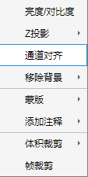
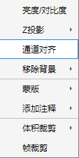

1.2.3 通道对齐
 单击通道对齐后出现下图所示对齐控制器，您可以通过控制按钮实现对双色通道的对齐。 单击控制器中心按钮提交更改，点击关闭按钮将取消更改。 注：建议在配准前检查通道对齐情况，对齐后注意XY方向裁剪以移除边缘。

单击通道对齐后出现下图所示对齐控制器，您可以通过控制按钮实现对双色通道的对齐。
单击控制器中心按钮提交更改，点击关闭按钮将取消更改。
注：建议在配准前检查通道对齐情况，对齐后注意XY方向裁剪以移除边缘。